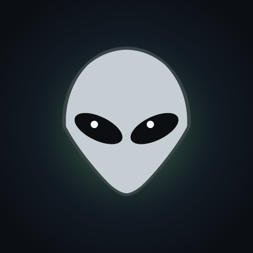

WE COME
IN PEACE
Veniamo in pace. Davvero. Gli umani non ci credono.
Versione di prova 0.27.0
Sul telefono, come un'app: apri «Gioca nel browser», poi dal menu del browser scegli
«Aggiungi a schermata Home» (Chrome) o Condividi → «Aggiungi alla schermata Home» (Safari).
Parte a schermo intero e funziona anche senza rete.
🤖 Android
Scarica l'APK- Apri il file scaricato.
- Se lo chiede, consenti l'installazione da questa fonte («app sconosciute»).
- Installa e gioca: in verticale, a schermo intero.
🪟 Windows
Scarica per Windows- Un solo file, parte senza installazione.
- Se Windows avvisa che l'app non è firmata: «Ulteriori informazioni» → «Esegui comunque».
- F11 per lo schermo intero.
I progressi restano sul dispositivo e in ogni versione (browser, Android, Windows) sono separati:
per spostarli usa il codice da esportare e importare nelle Impostazioni del gioco.